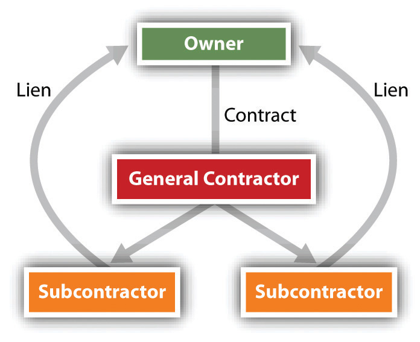

The security arrangements discussed so far—security interests, suretyship, mortgages—are all obtained by the creditor with the debtor’s consent. A creditor may obtain certain liens without the debtor’s consent.
Some nonconsensual liens are issued by courts.
An attachment lienA judicial lien imposed to preserve property during litigation. is ordered against a person’s property—real or personal—to prevent him from disposing of it during a lawsuit. To obtain an attachment lien, the plaintiff must show that the defendant likely will dispose of or hide his property; if the court agrees with the plaintiff, she must post a bond and the court will issue a writ of attachment to the sheriff, directing the sheriff to seize the property. Attachments of real property should be recorded. Should the plaintiff win her suit, the court issues a writ of execution, directing the sheriff to sell the property to satisfy the judgment.
A judgment lienA lien imposed to secure payment of a judgment owing. may be issued when a plaintiff wins a judgment in court if an attachment lien has not already been issued. Like the attachment lien, it provides a method by which the defendant’s property may be seized and sold.
The most common nonconsensual lien on real estate is the mechanic’s lienA claim allowed to one who furnishes labor, services, or materials to improve property.. A mechanic’s lien can be obtained by one who furnishes labor, services, or materials to improve real estate: this is statutory, and the statute must be carefully followed. The “mechanic” here is one who works with his or her hands, not specifically one who works on machines. An automobile mechanic could not obtain a mechanic’s lien on a customer’s house to secure payment of work he did on her car. (The lien to which the automobile mechanic is entitled is a “possessory lien” or “artisan’s lien,” considered in Section 34.3.3 "Possessory Lien") To qualify for a mechanic’s lien, the claimant must file a sworn statement describing the work done, the contract made, or the materials furnished that permanently improved the real estate.
A particularly difficult problem crops up when the owner has paid the contractor, who in turn fails to pay his subcontractors. In many states, the subcontractors can file a lien on the owner’s property, thus forcing the owner to pay them (see Figure 34.5 "Subcontractors’ Lien")—and maybe twice. To protect themselves, owners can demand a sworn statement from general contractors listing the subcontractors used on the job, and from them, owners can obtain a waiver of lien rights before paying the general contractor.
Figure 34.5 Subcontractors’ Lien
Anyone claiming a lien against real estate must record a lien statement stating the amount due and the nature of the improvement. The lienor has a specified period of time (e.g., ninety days) to file from the time the work is finished. Recording as such does not give the lienor an automatic right to the property if the debt remains unpaid. All states specify a limited period of time, usually one year, within which the claimant must file suit to enforce the lien. Only if the court decides the lien is valid may the property be sold to satisfy the debt. Difficult questions sometimes arise when a lien is filed against a landlord’s property as a result of improvements and services provided to a tenant, as discussed in F & D Elec. Contractors, Inc. v. Powder Coaters, Inc., Section 34.4 "Cases".
A mechanic’s lien represents a special risk to the purchaser of real estate or to lenders who wish to take a mortgage. In most states, the mechanic’s lien is given priority not from the date when the lien is recorded but from an earlier date—either the date the contractor was hired or the date construction began. Thus a purchaser or lender might lose priority to a creditor with a mechanic’s lien who filed after the sale or mortgage. A practical solution to this problem is to hold back part of the funds (purchase price or loan) or place them in escrow until the period for recording liens has expired.
The most common nonconsensual lien on personal property (not real estate) is the possessory lienLien imposed by one who has possession of goods to secure payment for improvements to them.. This is the right to continue to keep the goods on which work has been performed or for which materials have been supplied until the owner pays for the labor or materials. The possessory lien arises both under common law and under a variety of statutes. Because it is nonconsensual, the possessory lien is not covered by Article 9 of the UCC, which is restricted to consensual security interests. Nor is it governed by the law of mechanic’s liens, which are nonpossessory and relate only to work done to improve real property.
The common-law rule is that anyone who, under an express or implied contract, adds value to another’s chattel (personal property) by labor, skill, or materials has a possessory lien for the value of the services. Moreover, the lienholder may keep the chattel until her services are paid. For example, the dry cleaner shop is not going to release the wool jacket that you took in for cleaning unless you make satisfactory arrangements to pay for it, and the chain saw store won’t let you take the chain saw that you brought in for a tune-up until you pay for the labor and materials for the tune-up.
An important statutory lien is the federal tax lienA lien imposed by the government to secure payment of taxes owing.. Once the government assesses a tax, the amount due constitutes a lien on the owner’s property, whether real or personal. Until it is filed in the appropriate state office, others take priority, including purchasers, mechanics’ lienors, judgment lien creditors, and holders of security interests. But once filed, the tax lien takes priority over all subsequently arising liens. Federal law exempts some property from the tax lien; for example, unemployment benefits, books and tools of a trade, workers’ compensation, judgments for support of minor children, minimum amounts of wages and salary, personal effects, furniture, fuel, and provisions are exempt.
Local governments also can assess liens against real estate for failure to pay real estate taxes. After some period of time, the real estate may be sold to satisfy the tax amounts owing.
There are four types of nonconsensual liens: (1) court-decreed liens are attachment liens, which prevent a person from disposing of assets pending a lawsuit, and judgment liens, which allow the prevailing party in a lawsuit to take property belonging to the debtor to satisfy the judgment; (2) mechanics’ liens are authorized by statute, giving a person who has provided labor or material to a landowner the right to sell the property to get paid; (3) possessory liens on personal property allow one in possession of goods to keep them to satisfy a claim for work done or storage of them; and (4) tax liens are enforced by the government to satisfy outstanding tax liabilities and may be assessed against real or personal property.